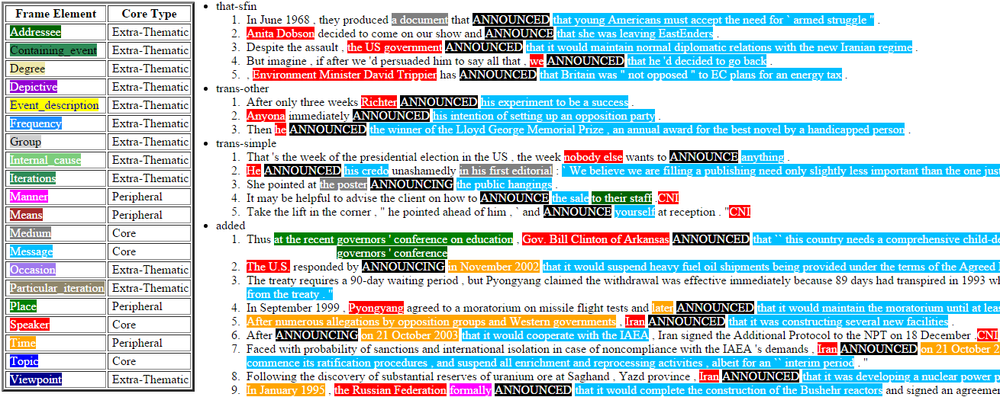
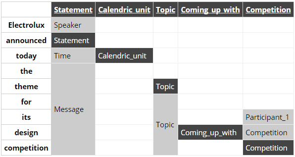

FN goes NIF: Integrating FrameNet in NIF
Table of Contents
1 What is FrameNet
FrameNet (FN) is a large-scale linguistic resource for English developed at ICSI (UC Berkeley). Documents the syntactic and semantic combinations (valences) of predicative word senses:
- Frames are conceptual situations along with their participants
e.g.frame:Statementis an event in which a statement is made - Lexical Units (LU) are phrases or words that evoke frames
e.g.lu:announce.vandlu:declare.vboth evokeframe:Statement - Frame Elements (FE) are roles taken by participants in a frame: things, entities, times, places, etc
e.g.fe:Speaker.statement,fe:Message.statement
1.1 Frames
Eg annotations of frame:Statement, lu:announce.v over varying phrases. Colors show different FE's

1.1.1 Frame Documentation
Frames are extensively documented. E.g. documentation for frame:Statement:
- Definitions for each FE (classified as Core, Non-Core and Extra-Thematic)
- "Coreness sets": which FE alternatives are required to realize the frame.
- eg
{Message, Topic} - and
{Medium, Speaker}
- eg
- Frame relations: inheritance, using, subframe, causative/inchoative, etc.
- Similar toUML Use Case relations but richer.
1.1.2 Frame Relations
Visualization with FrameGrapher

1.1.3 Frame Relations
The figure for Statement shows that:
Statementis inherited byComplaining, Predicting, Reading_aloud, Recording, Reveal_secret, Telling(red arrows)StatementusesCommunication(green arrows)Statementis used byAdducing, Attributed_information, Chatting, Judgment_communication, Renunciation, Unattributed_information(green arrows)- FE relations between
StatementandTellingalso shown - FE status: c (Core), nc (Non-Core)
- Eg
fe:Addressee.statementis nc: can make a statement without addressing anyone in particular - But
fe:Addressee.tellingis c: you have to tell someone.
- Eg
1.2 SEMAFOR
- Some softwares are available for automatic FN annotation
- Used SEMAFOR to annotate sample sentence
- Electrolux announced today the theme for its design competition
- Candidate frames are generated from Dependency Parsing
- Highlighted:
frame:Statement- invoked by
lu:announce.v - FEs
Speaker,Time,Message
- invoked by

1.2.1 SEMAFOR
May be easier to see the candidate frames in vertical layout
- Each column is a frame

1.2.2 Candidate Frame Filtering
SEMAFOR returns JSON with candidate frames, LUs, FEs, and frame score
| Frame | Score |
|---|---|
| Statement | 113.2 |
| Competition | 54.6 |
| Coming_up_with | 50.7 |
| Calendric_unit | 30.4 |
| Topic | 25.4 |
- 2 top-scoring candidates (
StatementandCompetition) are the best frames Coming_up_withis wrong ("design competition" is not creative "design")TopicandCalendric_unitare parts ofStatement
Filter candidate frames:
- Order candidate frames by decreasing score
- Repeat:
- Add the highest scoring frame f
- Discard any frames that are governed by f in the dependency tree
2 FN LOD
- FN has been converted to RDF LOD by ISTC CNR (Italy)
- Covers FrameNet metamodel (tbox) and frame definitions (abox)
- Includes a corpus of sentences annotated with FN (fndata)
Impediments to real world use:
- Complexity of the involved ontologies
- There are two to choose from: fntbox and framenet
- framenet is significantly more complex
- Perhaps corresponds better to FN Book
- But is not used in fndata so not considered further
- See paper for links and diagram of framenet
- Lack of overall picture how classes and properties fit together
- Lack of adequate documentation for some ontology elements
2.1 FN LOD Documentation
FN LOD paper:
- Nuzzolese A.G., Gangemi A., and Presutti V. Gathering lexical linked data and knowledge patterns from FrameNet (K-CAP'11)
- Must also know the FN-book: Ruppenhofer J., Ellsworth M., Petruck M.R.L, Johnson C.R., Scheffczyk J. FrameNet II: Extended Theory and Practice, Sep 2010
- Ontology diagram in the paper doesn't show all classes and relations
Many elements not documented, e.g. class fn:Header, data prop fn:frame_cBy
- Can you guess that's ID of the person who created the frame?
We studied fndata and diagrammed classes and properties to understand them
- fndata is very large
- had to extract smaller connected fragments to understand them
2.2 fntbox Ontology
fntbox (terminology box) is the FN-LOD metamodel. OWLDoc documentation
- Uses Restrictions extensively: easiest to understand in Manchester notation ./fntbox.omn
- 16 Classes, 67 ObjectProperties, 49 DataProperties
- Most relations have inverses, which hinders understanding the data hierarchy implied by the ontology
Prefixes (registered in prefix.cc):
| prefix | description |
|---|---|
| fn: | FN metamodel (tbox) |
| frame: | frame |
| fe: | frame element |
| lu: | lexical unit |
| st: | semantic type |
2.2.1 fntbox Diagram
{kind=link}
2.2.2 fntbox Understanding (1A)
To understand fntbox consider the classes in two groups and navigate top-down.
(1) Text and annotations (FN and other linguistic info):
Headerholds together allFullTextAnnotationandCorpDocabout the same frame.FullTextAnnotationrepresents a mode of annotation where sentences are "preselected" by a given text.CorpDocis a corpus comprising of documents and sentences that are carefully chosen by lexicographers to illustrate the possible valences of LUs, i.e. make various frames for each sense of each LU.Sentenceholds thetextbeing annotated and some identifying information.AnnotationSetis a set of annotations about one frame. One sentence may have several frames and they may even overlap.
2.2.3 fntbox Understanding (1B)
Layer: subset of annotations with a single purpose, indicated in fn:layer_name.
Often used ones:
- Target: LU that is target of the frame. Such layer has a single label.
- FE: frame elements
- PENN: part of speech (e.g. VBD, VVN, dt, nn)
- PT: phrase type (e.g. NP, AJP, PP, PPing)
- GF: grammatical function (e.g. Ext, Obj, Dep, Comp)
- NER: named entity recognition (e.g. person, location)
2.2.4 fntbox Understanding (1C)
Label: word or phrase in an annotated Sentence
- selected by index
label_start, label_end
Can be:
- LU instance:
fn:label_name"Target", or - FE instance:
fn:label_FEpoints to FE definition e.g.fe:Speaker.statement, or - Carries grammatical or POS tag in
label_name, or - Indicates lexically omitted FE (FN book 3.2.3 Null instantiation):
fn:label_itype"CNI", "DNI", etc
2.2.5 fntbox Understanding (2A)
(2) Frame definition:
Frame: abstracts over a real-world situation- Relations:
Causative, Inchoative, Subframe, inherits, uses, precedes, perspectiveOn
- Relations:
LexUnit: head-word of a (sub)sentence, invokes the frameSentenceCount: simple statistics to manage annotators work
Lexeme: linguistic representation of LU (a LU can have several)- Frame 7 LU point to
AnnotationSetsthat attests them
2.2.6 fntbox Understanding (2B)
FrameElement: entity participating in a frame- Eg Things, actors, times, messages, etc
- FE relations:
excludes, requires, SubFE FE_coreType: Core, Core-Unexpressed, Extra-Thematic, PeripheralFECoreSet: set of alternative FEs, one must be present in the frame
SemTypeclassifies elements, eg- for Frame:
Non-perspectivalized_frame,Non-Lexical_Frame - for FE:
Sentient(agent),Artifact,Message,State_of_affairs
- for Frame:
2.3 fnabox Ontology
fnabox (assertion box) includes all frame definitions
- Only individuals, not classes nor property definitions.
- Had illegal local-name chars (spaces and parentheses): converted to underscores
- e.g.
lu:swing_(into).v->lu:swing__into_.v
- e.g.
- Converted to ./fnabox.ttl: more readable, all statements about an individual are together. Eg
frame:Statement fn:hasFrameElement fe:Time.statement, fe:Iteration.statement... ; fn:hasLexUnit lu:gloat.v, lu:explain.v, lu:declaration.n, lu:talk.v... ; fn:isInheritedBy frame:Telling, frame:Reveal_secret, frame:Recording... ; fn:isUsedBy frame:Unattributed_information, frame:Adducing... ; fn:uses frame:Communication .
Triples for a couple of the core FEs in that frame:
fe:Speaker.statement a fn:FrameElement ; fn:hasSemType st:Sentient ; fn:hasSuperFE fe:Speaker.speak_on_topic... fe:Message.statement a fn:FrameElement ; fn:hasSemType st:Message ; fn:hasSuperFE fe:Message.encoding, fe:Message.communication...
2.4 fndata Dataset
fndata_v5: FN LOD annotations corpus
- 3.8M triples
- 540Mb of RDF/XML (292Mb Turtle, 1.03Gb NTriples)
- 5946 sentences, 20361 frame instances (
annotationSetFrame) - 3.4 frames per sentence
- 640 triples per sentence, 45 triples per frame
2.4.1 fndata Sample
./iran_missile_sentence_52.ttl: all triples about iran_missile_fullTextAnnotation_sentence_52
- sentence 3 of paragraph 10 of fullTextAnnotation corpus named "iran_missile":
- This project was focused on the development of a longer ranged (150-200 km) and more heavily armed version of the Israeli Gabriel anti-ship missile (not as sometimes reported with the development of a ballistic missile based upon Israeli Jericho surface-to-surface missile technology).
- 6 manually annotated frames: Gizmo, Bearing_arms, Cause_to_make_progress (twice), Project, Type
- Gizmo is invoked by "surface-to-surface missile technology"
- SEMAFOR reports these frames and a number of smaller frames (see next)
- SEMAFOR misses Gizmo: it may have an older set of frame definitions
Crucial in allowing us to understand the structure of FN-LOD and the meaning of most fields
2.4.2 fndata Sample in SEMAFOR
3 NIF
- NLP Interchange Format (NIF), formerly nlp2rdf
- Ontologies, specifications, software to exchange linguistic annotations as RDF/OWL
- NIF core: text annotations, binding to text
- Reuses and incorporates NLP vocabularies
"Payload" ontologies:
- ITS and NERD: Named Entity Recognition (NER): individuals and classes
- OLIA: tagsets of various types of NLP tools (Penn POS, Stanford dependency parse, etc)
- MARL: sentiment/opinion
Links:
- Hellmann S., Lehmann J., Auer S., Brümmer M. Integrating NLP using Linked Data, ISWC 2013
- Linguistic Linked Data intro, Multisensor 2014
- Extensive bibliography on Zotero
- MASC+BabelNet as NIF, MASC+BabelNet+IATE as NIF
3.1 NIF Core Schema

4 Comparing FN-LOD to NIF
- The FN-LOD and NIF models are very dis-similar
- How to put them together?
- Start with a comparison between the two
4.1 Text Framing
Document:
- Document is the basic correspondence level:
fn:Documentvsnif:Context - Text is stored in
fn:textvsnif:isString
Above document:
- FN-LOD has
fn:CorpDocorfn:FullTextAnnotation(two kinds of corpora). - NIF uses
nif:broaderContextto point to higher-level contexts
Below document:
- FN-LOD:
fn:Sentenceis the basic level, thenfn:AnnotationSet, fn:Layer, fn:Label - NIF: generic class
nif:Structure, subclassesParagraph,Sentence,Phrase,Word… - Char offsets:
fn:Label: label_start, label_endvsnif:String: beginIndex, endIndex
4.2 Text Links
NIF links:
- Every
String(Paragraph,Sentence,Phrase…) points to enclosing context (referenceContext) subString(invsuperString) points uniformly from higher level texts to lower level textsword(invnif:sentence): from sentence down to its words (not declared sub-prop ofsubString?)- Chains: sentences (
previousSentenceinvnextSentence), words (previousWordinvnextWord) - From sentence to
firstWordandlastWord
FN-LOD: non-uniform treatment of links:
- from
Sentenceto its strings (Label): must follow property path sentenceInDocument/annoForSentence/hasLayer/hasLabel
4.3 Text Nodes
Most significant difference between FN-LOD and NIF.
FN-LOD:
- Defines Labels "as needed" by linguistic annotation, and locally
- Several Label nodes can point to the same piece of text (offsets in the document)
- Labels are not shared between different annotations (NLP features)
- No recommendation about text node URLs
NIF:
- Defines Strings for every word and sentence of the document, globally.
- Each piece of text is represented by one node
- (But Words overlap Phrases, Phrases overlap Sentences)
- Recommends RFC5147 URLs based on char offset, eg
<#char=282,253> a nif:Phrase; nif:beginIndex 282; nif:endIndex 253; nif:referenceContext <#char=0,2353>. # whole text
- Ensures interoperability: different NLP tools emit triples against the same nodes, so triples "mesh" together
5 Integrating FN-LOD in NIF
- The FN-LOD and NIF models for representing annotated text are totally different
- Principle: represent minimum possible FN nodes, point to them using
nif:String.oliaLink
Multisensor relies on a dependency parse of the sentence. Assume:
- head is a head-word that governs word1..N
- head corresponds to lexUnit that invokes frame
- frame has elements frameElement1..N, corresponding to word1..N
- (for illustration) frame has a lexically omitted FE frameElementN+1 of type CNI (constructional null instantiation)
Note: same model works without dependency parse, if you have some other way of discovering FEs
5.1 Diagram of FN-LOD in NIF

5.2 Understanding FN-LOD in NIF (1)
Think of fn:AnnotationSet as frame instance and of fn:Label as FE instance. 3 tiers:
- NIF has word offset info, dependency tree from head to word1..N (not shown).
nif:dependencyor specific sub-props are used for that tree- eg MS uses
upf-deep:deepDependency
- Frame instance connects
nif:Wordstofn:AnnotationSetthus frame - Frame definition is defined in fnabox ontology
5.3 Understanding FN-LOD in NIF (2)
- Skipped
fe:label_start/end, they duplicatenif:begin/endIndex - Same word can participate in several frames (as LU or FE): will have multiple
nif:oliaLink - labelN+1 is lexically omitted FE (of type CNI) with no corresponding NIF node
- Nodes labelLU and layerLU are redundant, carry no information (except the fixed string "Target").
- Indirect path
fn:hasLayer/fn:hasLabelis even "harmful": it causes head to have twonif:oliaLink, which could be confusing - Included these redundant nodes to be faithful to fntbox ontology, but they can safely be omitted
- Indirect path
- Links of label1..N+1 are not redundant:
fn:hasLabelties the frame instance togetherfn:label_FEpoints to specific FE in the frame definition
5.4 Querying FN-NIF
- FN-LOD in NIF involves a fairly complex graph structure
- We show a few queries to extract data from that graph
- We use SPARQL property paths liberally, including inverses
^ - We indicate the input parameter of a query with
$ - Don't bother to check intermediate node types: rely that specific FN properties occur only on appropriate nodes
5.4.1 Find Frame and LU corresponding to a head-word
- Find frame and LU of head-word
$head(if it has a frame):
select * { $head nif:oliaLink ?annoSet. ?annoSet fn:annotationSetLU ?lu; fn:annotationSetFrame ?frame}
Could also use the round-about path:
select * { $head nif:oliaLink [ fn:label_name "Target"; ^fn:hasLabel/^fn:hasLayer ?annoSet. ?annoSet fn:annotationSetLU ?lu; fn:annotationSetFrame ?frame]}
5.4.2 Get all FE and constituents of a head-word
- Find all FEs and constituent words of head-word
$head:
select ?fe ?word ?itype { # Find the ?annoSet and ?frame $head nif:oliaLink ?annoSet. ?annoSet fn:annotationSetFrame ?frame. # Get all ?fe, ?label, (optionally) ?word ?frame fn:hasFrameElement ?fe. ?annoSet fn:hasLayer/fn:hasLabel ?label. ?label fn:label_FE ?fe. optional {?word nif:oliaLink ?label} optional {?label fn:label_itype ?itype}}
5.4.3 Find all frames of a sentence
- Usually
nif:wordis used to point out the words of a sentence- (Also practice in Multisensor)
- Find annotation sets and frames of
$sentence:
select * { $sentence nif:word/nif:oliaLink ?annoSet. ?annoSet fn:annotationSetFrame ?frame}
5.4.4 Find all frames of complete text
- NIF mandates that
nif:referenceContextis used to connect each word to the complete text - Find all frames of
$context(anif:Context):
select * { $context ^nif:referenceContext/ nif:oliaLink ?annoSet. ?annoSet fn:annotationSetFrame ?frame}
6 Examples
6.1 Stylized Example
- Electrolux announced today the theme for its design competition
- 3 of 5 candidate frames shown (
Statement, Topic, Competition) - Elided for simplicity:
Label,Layer,AnnotationSet

6.2 Actual Example (1)
- 42% of this cost - some $183b - is the annual direct medical and extended care expenses

6.3 Actual Example (2)
- 12 frames
- in addition to FN frames, includes
fe-upf:Linguistic_situationto connect the graph

7 Future Work, Acknowledgements
Representing Confidence. Candidates:
nif:oliaConffrom NIF 2.0: confidence ofnif:oliaLinkandnif:oliaCategorynif-ann:confidencefrom NIF 2.1 RCfise:confidencefrom Stanbol EntityAnnotation Structure
RDF Shapes:
- This work is not an ontology but an application profile, data pattern or RDF Shape
- W3C RDF Shapes working group is close to defining standards for data shapes
Acknowledgements: